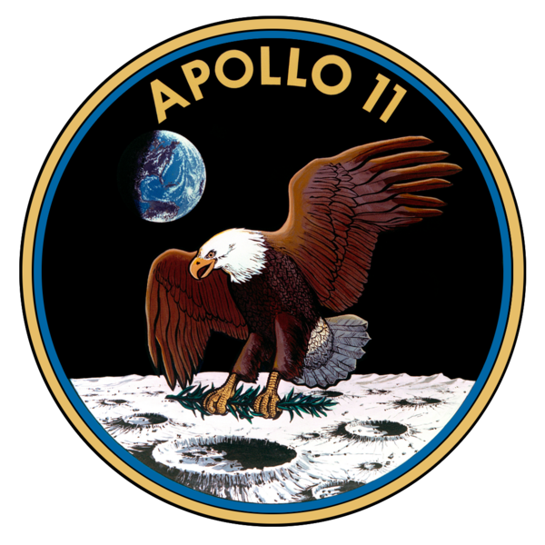
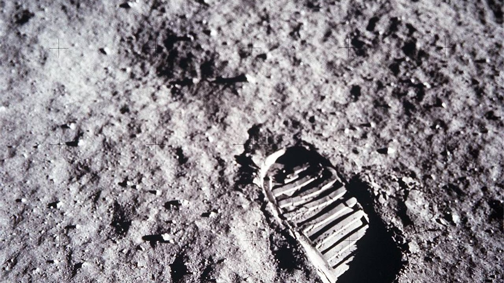

El Programa Apolo fue un programa espacial tripulado desarrollado por Estados Unidos en la década de 1960 en el marco de la carrera espacial con la Unión Soviética durante la Guerra Fría. El proyecto comenzó en julio de 1960, cuando la agencia espacial estadounidense NASA anunció el programa, como continuación de las misiones Mercury, que tendría como objetivo el sobrevuelo tripulado de nuestro satélite para localizar una zona apropiada con vistas a un eventual alunizaje de astronautas, que cumpliría así el viejo sueño del viaje a la Luna por parte del ser humano. Esto se hizo finalmente realidad en julio de 1969, cuando la misión Apolo 11,
comandada por Neil Armstrong, Edwin Aldrin, y Michael Collins alunizó por primera vez en el satélite terrestre.
EXITO:Misión tripulada de prueba; pruebas del rendimiento del cohete Saturno y su interacción con la tripulación
APOLLO 8
Frank Borman, James Lovell y William Anders
EXITO:Primer vuelo tripulado que escapó de la gravedad terrestre
APOLLO 9
James McDivitt, David Scott y Russell Schweickart
EXITO:Primera prueba del vehículo en configuración lunar (CSM/LM/Saturno V).
APOLLO 10
Thomas Stafford, John W. Young y Eugene Cernan
EXITO:Ensayos de separación y acoplamiento en órbita lunar entre el Módulo de Mando y el Módulo Lunar.
APOLLO 11
Neil Armstrong, Edwin E. Aldrin y Michael Collins
EXITO: Primer descenso lunar (en el Mar de la Tranquilidad).
APOLLO 12
Charles Conrad, Richard Gordon y Alan L. Bean
EXITO:Aterrizaje de precisión sobre la Luna, en las cercanías de la sonda Surveyor 3.
APOLLO 13
James Lovell, Fred Haise y John Swigert
EXITO parcial. Una explosión de uno de los tanques de oxígeno del Módulo de Mando
APOLLO 14
Alan B. Shephard, Stuart A. Roosa y Edgar Mitchell
EXITO.Primer aterrizaje de una tripulación sobre una región montañosa (Fra Mauro).
APOLLO 15
David Scott, James B. Irwin y Alfred Worden
EXITO.Primera misión que utiliza el «rover lunar»; primera colocación de un subsatélite en órbita lunar.
APOLLO 16
John Young, Thomas Mattingly y Charles Duke
EXITO.Primera utilización de la Luna como observatorio astronómico.
APOLLO 17
Eugene Cernan, Ronald Evans y Harrison Schmitt
EXITO.Récords de estancia en la Luna, de mayor tiempo en órbita lunar, de tiempo en salidas extravehiculares, del uso del «rover», de mayor distancia recorrida y mayor recogida de muestras lunares de todas las misiones Apolo.
Apolo 11 fue una misión espacial tripulada de Estados Unidos cuyo objetivo fue lograr que un ser humano caminara en la superficie de la Luna. La misión se envió al espacio el 16 de julio de 1969, llegó a la superficie de la Luna el 20 de julio de ese mismo año y al día siguiente logró que dos astronautas (Armstrong y Aldrin)
caminaran sobre la superficie lunar. El Apolo 11 fue impulsado por un cohete Saturno V desde la plataforma LC 39A y lanzado a las 13:32 UTC del complejo de cabo Kennedy, en Florida (EE. UU.). Oficialmente se conoció a la misión como AS-506. La misión está considerada como uno de los momentos más significativos de la historia de la Humanidad y la Tecnología.
La tripulación del Apolo 11 estaba compuesta por el comandante de la misión Neil A. Armstrong, de 38 años; Edwin E. Aldrin Jr., de 39 años y piloto del LEM, apodado Buzz; y Michael Collins, de 38 años y piloto del módulo de mando. La denominación de las naves, privilegio del comandante, fue Eagle para el módulo lunar y Columbia para el módulo de mando.  <-PARA SABER MAS <-PARA SABER MAS
El 18 de junio, semanas antes del lanzamiento, comienza la carga de queroseno de la primera etapa. El 15 de julio, ocho horas antes de la hora prevista y para evitar pérdidas, se bombea el oxígeno líquido (LOX) e hidrógeno líquido (LH2) en las tres etapas del cohete.
El 16 de julio, los astronautas Neil Armstrong, Buzz Aldrin y Michael Collins, son trasladados hasta la nave para proceder a su posterior lanzamiento. El director de vuelo, Gene Kranz, verifica las recomendaciones del ordenador y consulta a los miembros de su equipo. Entonces comienza la secuencia de ignición.
Cuando los cinco motores F-1 de la primera etapa se encienden, los sistemas de refrigeración se encargan de arrojar varias toneladas de agua sobre el cohete para protegerlo del calor. Con la vibración se desprende la escarcha que lo recubre, debido a las bajas temperaturas de los propergoles. Cuando el cohete alcanza el 95% de empuje total, los ganchos que lo retienen se sueltan; y con una ligera sacudida el cohete se despega y comienza a elevarse, y los cinco últimos brazos de la plataforma caen. Ya los motores F-1 consumen quince toneladas de combustible por segundo.
A las 10:32 de la mañana en Cabo Cañaveral el Saturno V abandona la rampa de lanzamiento. Durante la misión la tripulación establecerá contacto con el centro de control en Houston, y una vez que despega, Cabo Cañaveral traspasa el control a Houston.
Ciento sesenta segundos después, la segunda etapa se pone en marcha ya que la primera etapa agoto su combustible y se desprenden, iniciándose la segunda etapa, cuya tarea es que siga ganando mayor velocidad. También se produjo la separación del escape de emergencia en el módulo de mando, para continuar con la salida del campo gravitatorio. Tras nueve minutos del lanzamiento, los motores J-2 de la segunda etapa se separan. Y las turbo bombas de la tercera etapa envían combustible a su único motor, y el cohete vuelve a acelerar.
Doscientos segundos después el motor se apaga y comienzan a notar la ausencia de gravedad. El Apolo 11 está en órbita.
Todos los sistemas funcionan con normalidad. Neil Armstrong dispara una corta ráfaga de impulsos con los propulsores de posición y tres segundos después el motor principal del LEM entra en ignición y funciona al 10% durante veintiséis segundos mientras el sistema de control automático estabiliza la nave. Después el motor del LEM despliega toda su potencia.
El ordenador trabaja según su programa 63 que es el modo totalmente automático. Siete minutos después de iniciado el descenso y a una altura de unos seis kilómetros de la superficie, Neil Armstrong introduce el programa número 64. Con este, el empuje del motor desciende hasta un 57% y se sitúa en posición horizontal con la superficie de la Luna. El sitio exacto estaba a menos de veinte kilómetros al Oeste. Esos momentos, el oficial de guiado comunica al director de vuelo que el LEM viaja a más velocidad de la programada. Este hecho podía causar el aborto del alunizaje pero el director decide seguir con los procedimientos de alunizaje.
Debido a estoel LEM sobrepasa el lugar donde debería haber alunizado. Al parecer, se están conduciendo hacia un gran cráter con rocas esparcidas que causarían serios daños si el alunizaje se produjese. Armstrong desconecta el programa 64 e introduce el 66, este controla el motor semiautomático pero deja en manos de la tripulación la traslación lateral del LEM. El módulo lunar se desliza en horizontal buscando un lugar para el alunizaje mientras Aldrin va leyendo los datos del radar y el ordenador. El LEM pierde altura gradualmente y a menos de dos metros de la superficie, una las varillas sensoras que cuelgan de las patas del LEM, toca el suelo. El Eagle recorre el último metro en una suave caída gracias a la débil gravedad lunar. El terreno ha resistido bien el peso del aparato y todos los sistemas funcionan.
Houston…aquí base Tranquilidad, el Águila ha alunizado.
En Houston son las 15:17 del 20 de julio de 1969 (las 20:17:39 h UTC). El Eagle está posado sobre la superficie del satélite. En el momento del contacto el motor de descenso posee sólo unos 30 segundos de combustible restante, alunizando a 38 m de un cráter de 24 m de diámetro y varios de profundidad.
Seis horas y media después del alunizaje, los astronautas están preparados para salir del LEM. El primero en hacerlo es Armstrong, quien mientras desciende por las escaleras activa la cámara de televisión que retransmitirá imágenes a todo el mundo. Una vez hecho esto, describe a Houston lo que ve, y al pisar el suelo a las 2:56 del 21 de julio de 1969 (hora internacional UTC), dice la famosa frase: "Un pequeño paso para un hombre, un gran salto para la Humanidad".
El reloj de Houston señala las 22:56. En un primer momento por seguridad los astronautas iban unidos a un cordón enganchado al LEM. Al ver que no corrían ningún peligro se deshicieron de él. Armstrong toma fotografías del paisaje aledaño y más tarde toma muestras del suelo lunar. Entretanto Buzz Aldrin se prepara para salir del LEM de la misma manera que su comandante, el segundo de a bordo baja por la escala, contempla a su alrededor y a continuación dice: (Aldrin) "Hermoso... hermoso..."
(Armstrong) "La vista de una magnífica desolación."
(Aldrin) "Magnífica definición."

Los astronautas se percatan de la baja gravedad y comienzan a realizar las tareas que les han encomendado, instalar los aparatos del ALSEP, descubrir una placa con una inscripción que conmemora la efeméride, después se instala una cámara de televisión sobre un trípode a veinte metros del LEM. Mientras tanto se instala un detector de partículas nucleares emitidas por el Sol, que es una especie de cinta metalizada sobre la que incide el viento solar que deberán trasladar al LEM y analizarla en la Tierra. Más tarde despliegan una bandera estadounidense, con dificultad para clavarla en el suelo selenita e inician una conversación telefónica con el presidente de los Estados Unidos Richard Nixon.
Por último instalan a pocos metros del LEM un sismómetro para conocer la actividad sísmica de la Luna y un retrorreflector de rayos láser para medir con precisión la distancia que hay hasta el satélite. Mientras tanto, Michael Collins sigue en órbita en el módulo de mando con un ángulo muy rasante. Cada paso en órbita, de un horizonte a otro, sólo dura 6 minutos y medio pero no es capaz de ver a sus compañeros. Cada dos horas ve cómo cambia la Luna y también observa cómo orbita debajo de su cápsula la sonda soviética Luna 15 en dos ocasiones.
Regreso a la Tierra
El transbordo de las muestras y la desconexión de parte de los sistemas del módulo Eagle, ocupa a la tripulación durante dos horas, y cuando se sitúan en sus puestos, se preparan para abandonar al Eagle en la órbita de la luna. A las 6:35 del 22 de julio encienden los motores del módulo iniciando el regreso a la Tierra. Es la maniobra denominada inyección trans-tierra, es un encendido hipergólico de dos minutos y medio y que sitúa al Columbia en una trayectoria de caída hacia la Tierra que concluirá en sesenta horas.
Durante el viaje de regreso se realizan leves correcciones de rumbo. Houston les informa de que hay posibilidades de temporal en la zona prevista para el amerizaje y redirigen al Apolo 11 a una zona con tiempo estable, concretamente a 1.500 km al sudoeste de las islas Hawái, donde serán recogidos en el Océano Pacífico por los tripulantes del portaaviones USS Hornet, un veterano de la Segunda Guerra Mundial, tras efectuar 30 órbitas a la Luna.
Los equipos de recuperación se preparan para recoger a la tripulación del Apolo 11. A unos kilómetros por encima, el módulo de mando con la tripulación en él, se ha separado del módulo de servicio y se preparan para la reentrada. En esta parte de la misión no hacen falta motores de frenado puesto que es el rozamiento el que se encarga de disminuir la velocidad de la cápsula desde los 40.000 km/h iníciales a unos pocos cientos, de modo que puedan abrirse los paracaídas sin riesgo de rotura. Hay que tener en cuenta que la reentrada es un proceso en el que la inmensa energía cinética de la cápsula se disipa en forma de calor haciendo que esta alcance una elevadísima temperatura, alcanzando los 3000 °C.
Unos minutos después de la pérdida de comunicaciones, se reciben en Houston las primeras señales procedentes de la nave. A ocho kilómetros se abren los dos primeros paracaídas para estabilizar el descenso. A tres kilómetros, estos son reemplazados por tres paracaídas piloto y los tres paracaídas principales de veinticinco metros de diámetro. Por fin consiguen amerizar a las 18:50 del 24 de julio, exactamente 8 días, 3 horas, 18 minutos y 35 segundos después de que el Saturno V abandonó la rampa del Complejo 39.
Esta misión fue un rotundo éxito para el gobierno estadounidense comandado por el Presidente Richard Nixon, y un homenaje a su inductor, el Presidente John Kennedy que no pudo disfrutar del mismo tras ser asesinado en 1963. El 24 de julio, los tres astronautas amerizaron en aguas del Océano Pacífico poniendo fin a la misión.
Esta placa está colocada en una de las patas de la fase de aterrizaje del módulo lunar que todavía permanece allí. Está firmada por la tripulación del Apolo 11 (Neil Armstrong, Buzz Aldrin, Michael Collins) y por el entonces presidente de los Estados Unidos (Richard Nixon).
En inglés: "Here Men From The Planet Earth First Set Foot Upon the Moon, July 1969 A.D. We Came in Peace For All Mankind".
En español: "Aquí, unos hombres procedentes del planeta Tierra, pisaron por primera vez la Luna en julio de 1969 d.C. Vinimos en son de paz en nombre de toda la humanidad".
Todos los astronautas de las misiones Apolo (que alunizaron) han corroborado que estuvieron en su superficie con sus testimonios, en múltiples entrevistas y conferencias, siendo el más activo Edwin Aldrin.
La comunidad científica internacional en general respalda la veracidad de los alunizajes, y en concreto varios científicos han respondido con mayor detalle las acusaciones de fraude:
Phil Plait: astrofísico y divulgador científico. Mantiene la página web Bad Astronomy, que rebate creencias y «teorías» pseudocientíficas, dedicada a rebatir creencias pseudocientíficas sobre astronomía y ciencia en general.
James Oberg: ingeniero, escritor y experto en historia espacial (sobre todo en el programa espacial de la URSS).